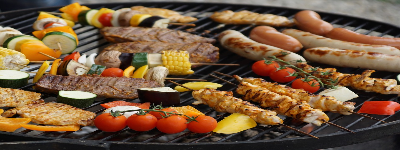

Handmade Burger House

Handmade Burger House serves best handmade burgers loaded with toppings of your choice. This is the place to satisfy your burger craving as we use fresh ingredients, house-made buns, organic chicken and grass-fed beef with zero additives. Tendorlion Sandwich is our signature dish served with home made crispy chips. Enjoy with a treat full of traditional flavours by dining in or take out. We also have a beautiful and spacious rooftop patio where you can eat in the open air. We are committed to the safety of everyone so we have amplified our safety procedures.